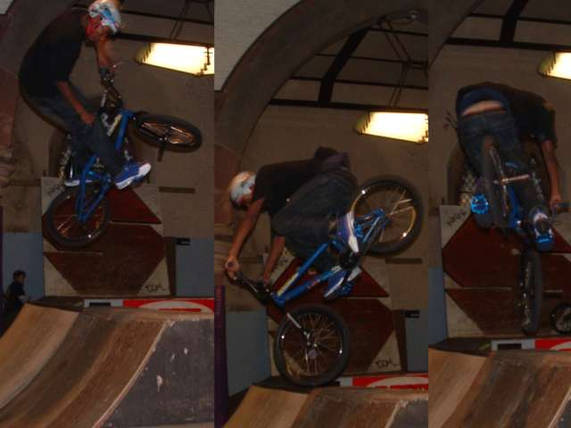
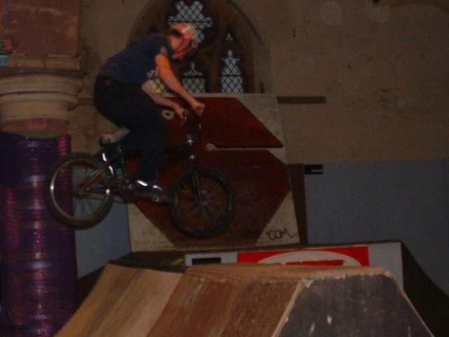
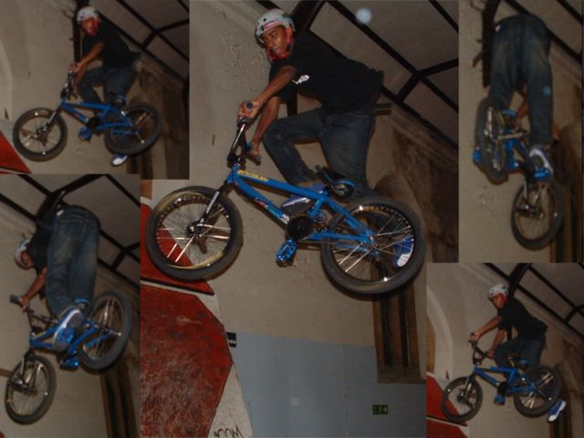
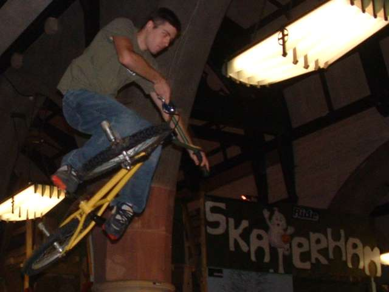
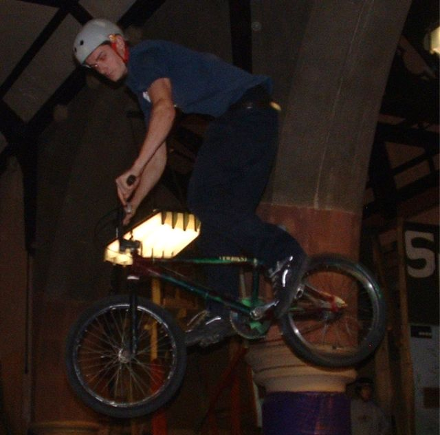
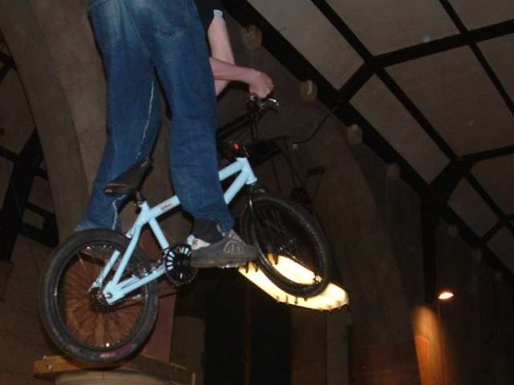

|
 me and tim went to skaterham with joe and simon. it was so busy because it was raining outside, so there wasn't a lot of time to get in any runs on the street course. simon waited a while for his wheels to dry off and then we went to play on the box. this guy was going big on the spine. really big. and i think he 360'd it which if its true is pretty good. below, joe alderson, 180 the spine. that looks really hard. especially to someone who can't fakie.  this is that really good guy again. he was trying and almost landing tailwhips. i think he might have got it once. his bike is colour co-ordinated. his shoes were blue too. i think there's a couple of 360 xups in there too.  simon's been teaching me tabletops. i have been getting a bit better at them. they are fun but very hard.  below is a joe 360. everyone cheered when someone else twisted, but when joe did, no one said anything. maybe it's because his bike looks rubbish. you can see all the colours.  one of simon's over xups. we pretty much rode the box for the rest of the time until the session finished. then we went to play in tesco for a bit. there's a few more pictures in here. becky took all the pictures again. it's really good when she takes them cos it means i can ride all the time and not think about all the photo opportunities that i am missing. it is very hard to take pictures in an indoor park, so i think these are pretty good considering. more pictures  |